MUSIC BY: LINO MONACO & NICOLA BUONO-the ne-21 - QUITE STRANGE
CREATIVE CODING
selphie, 2004 - by Lucio Luongo and maxmsp jitter
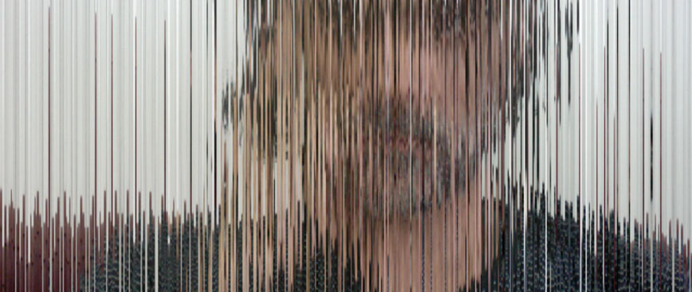
BIO
Born in Naples in 1972, Lucio Luongo is an accomplished art and creative director. With extensive experience in Naples,
Rome, Bologna, Milan, Berlin, and more recently London, he has established an undisputed reputation as a leader in his
field.
Lucio is an artist, programmer, and art director currently based in London, United Kingdom. He specialises in creating
video and interactive works that explore and transcend the boundaries between music and visuals, with a thematic focus
on love, death, and the vast array of emotions in between.
He has taught creative coding and media arts as a performative exploration of diverse software platforms. During his
tenure as the creative director of HUB Digital Labs, Lucio's passion for visual interaction led him to collaborate with
numerous artists, including Gerald Simpson (A Guy Called Gerald), Gaudi, Jeff Mills (Axis Records), System Seven,
RETINA.IT (Hefty Records), Ben UFO, Gaetano Parisio (Conform, Southsoul, Adagio Records), Robag Wruhme (Kompakt, Mutek),
Jahcoozi (Oren Gerlitz, Robert Koch, Sasha Perera), and Brando Lupi (Detune Records).
He has also worked with Avatar 41, an ensemble that includes Andrea Gabriele (Clap Rules, DFA Records), Mario Masullo
(Defrag, Kompakt), Maurizio Martusciello, Marco Messina (99 Posse), Lino Monaco and Nicola Buono (Men With Secrets,
QMen, Resina, Retina.it, The Ne-21), Claudio Sinatti (videomaker and visual designer for Ludovico Einaudi), Maria Di
Donna (99 Posse, Meg), and Mattia Casalegno (Aerobanquets RMX, artist and professor of creative computing at MIT,
Brooklyn).
Lucio formerly served as the Director of the Multimedia and Design module at the Istituto Superiore del Design (Superior
Art Design College) in Naples from 2004 to 2006. During this period, he taught Desktop Publishing and Colour Theory,
while also coordinating experimental multimedia courses. Additionally, he led an interdisciplinary team of designers,
programmers, photographers, musicians, and video editors to establish the pioneering company HUB Digital Labs, which
operated from 1999 to 2009.
Lucio is currently dedicating himself to the study of Creative Computing at Goldsmiths, University of London. Embracing
this pivotal opportunity, he is working hard to refine and narrow down his artistic language, blending technology and
creativity in his pursuit of mastery.
His desire for pushing boundaries technically and creatively has led him to unrivalled innovation. From a young age,
he immersed himself in music and applied arts. In parallel with his work as creative director, he has been in
constant touch with various artists, collaborating on projects, injecting his passion for video experimentation, continually
challenging the conventional. Researching the intensity of the relationship between love and death. Celebrating the
two great laws that dominate the human conscience is the central key for interpreting life.
It is like a cosmic DNA
that uses light as a vector for moving through the entire universe. The historical period we are living in is already
changing the perception of our surrounding universe through new frequencies that are already interacting with the
electromagnetic field of every life form on our planet.
Only now is traditional science accepting that DNA, genetic code, the code of life, possesses an infrastructure with
characteristics of a wave. The first serious message is signing the passage to the next age: Indigo Children. We are
at the point of no return, but with a big treasure: "Keep in touch with your consciousness" communicating with
different media tools. Not linear space design, stencils, posters, stickers, videos, photos, and meditation.
WORKS
untitled 2006
untitled 2013
Chiaroscuro
Galactic ascension
Waves and echoes from river Lea
Propaganda
SKILLS
WORD PROCESSOR

 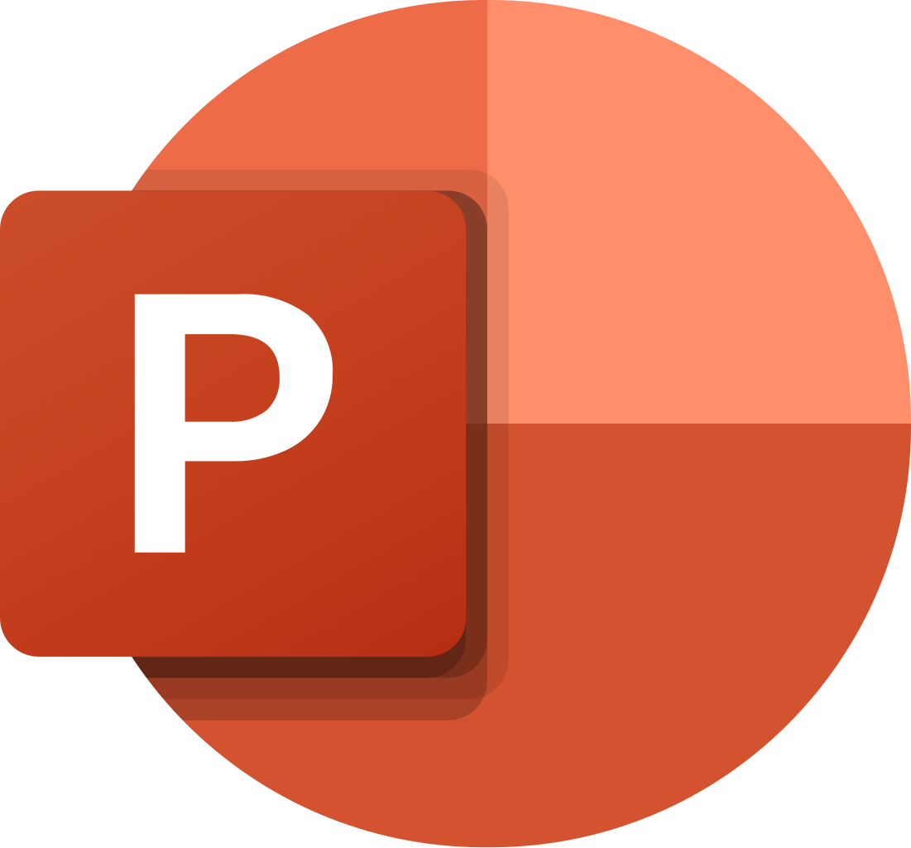
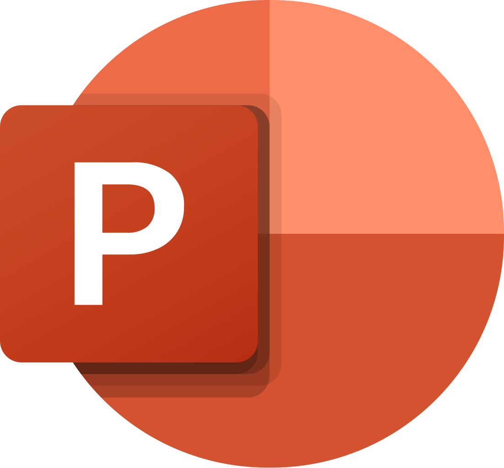
 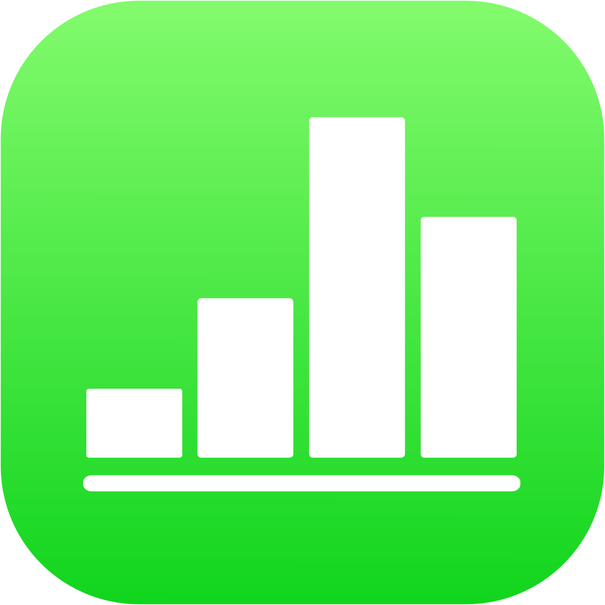
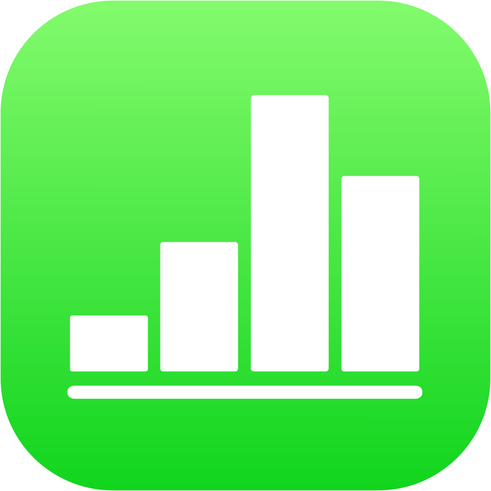

ADOBE


WEB EDITORS

VJ SOFTWARE
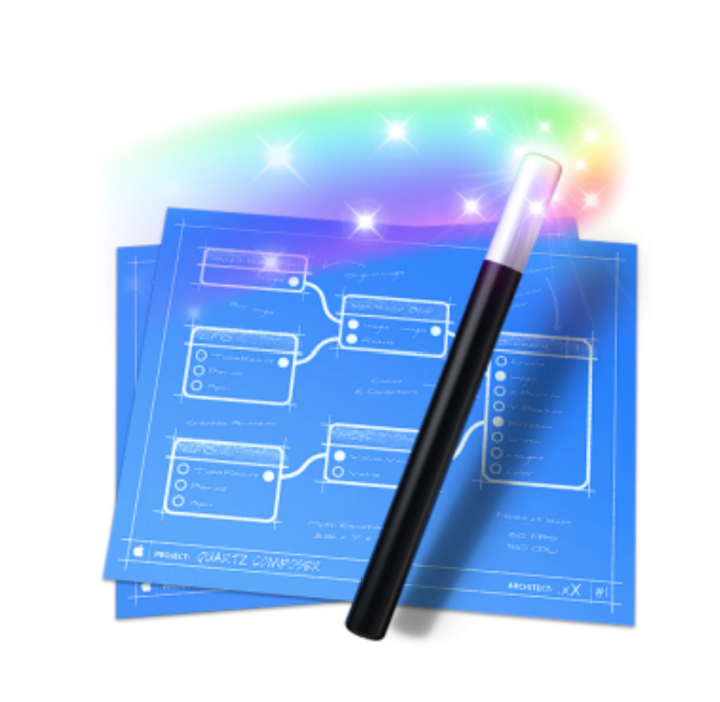
 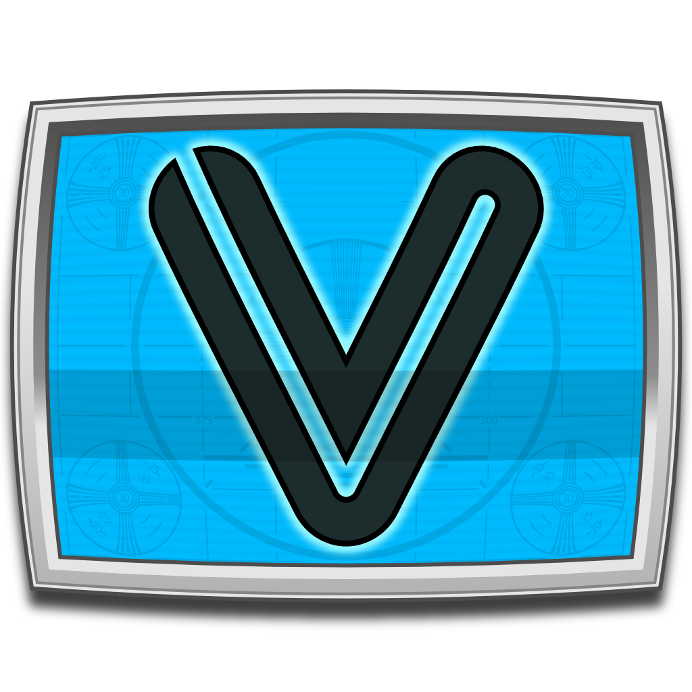
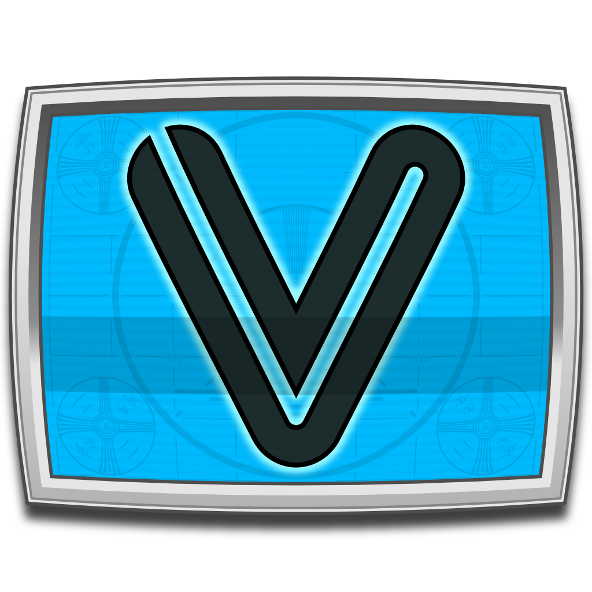
AUDIO

 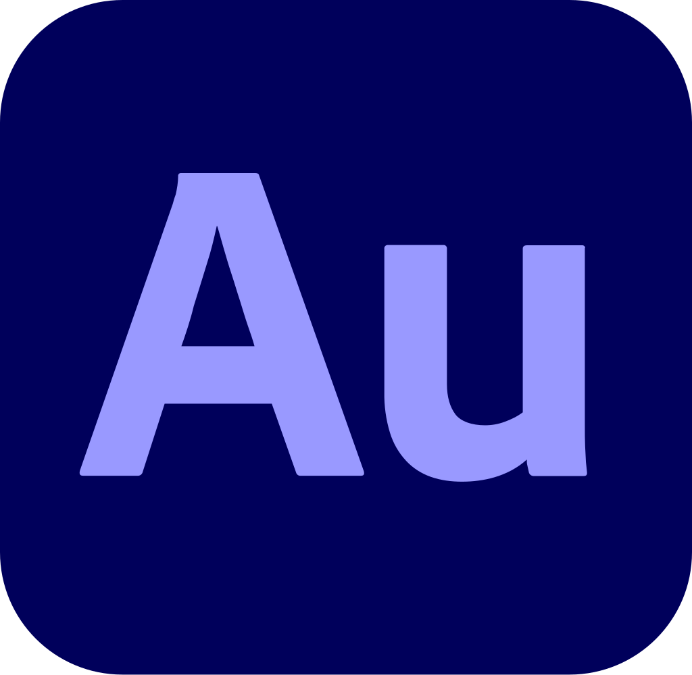
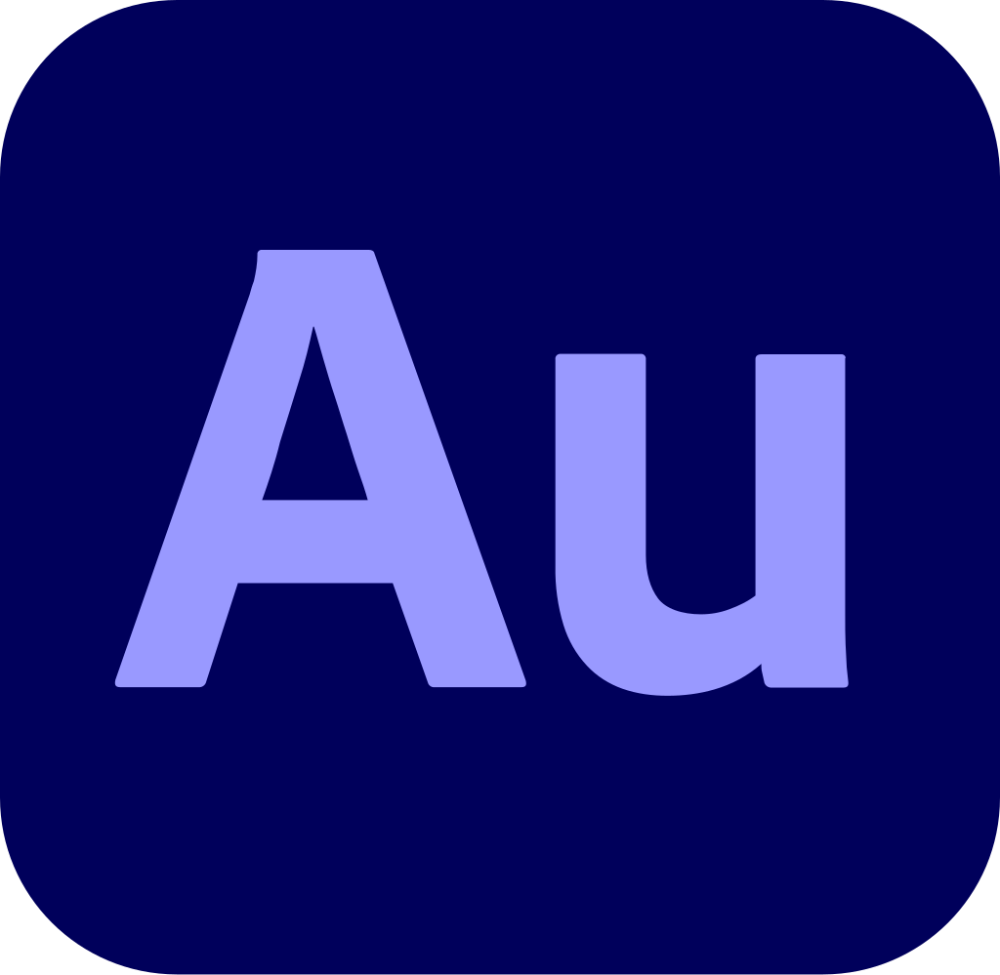
3D
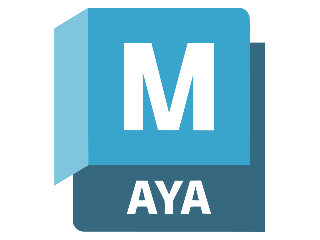
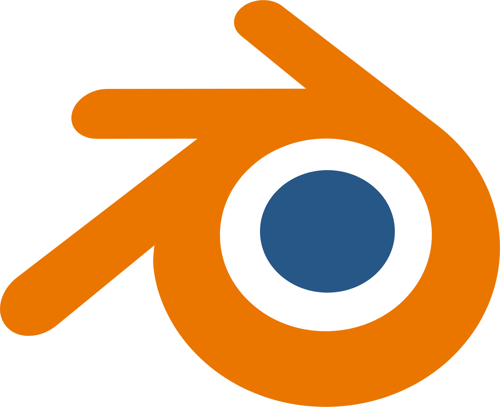
IOS